How can one changed building block affect a protein? Explore the 20 standard amino acids and the specially encoded 21st, selenocysteine, then test how side-chain chemistry changes a peptide model.
21 Human Proteinogenic9 EssentialPeptide Bonds4 Categories
PhenylalaninePhe · F · nonpolar ring
Drag to rotate · 3D conformers: PubChem (NCBI) · 3Dmol.js
Your investigation · 20–25 minutes
Change one residue. Keep the rest constant.
Learn: identify the shared backbone and changing R group. Test: replace Phe with Lys in an eight-residue chain. Explain: use sequence, bond count, and side-chain properties as evidence.
These protein-building α-amino acids share a core backbone — the unique R group (side chain) is what makes each one different.
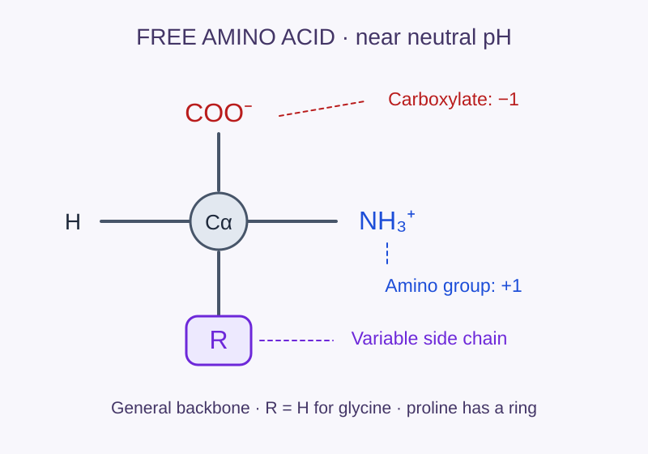
The shared α-amino-acid backbone near neutral pH. The amino and carboxylate groups have opposite charges. Glycine has R = H; proline’s side chain reconnects to nitrogen. Original classroom schematic.
Carboxylic acid group (–COOH)Acts as an acid — donates a proton. At body pH 7.4 it exists as –COO⁻ (deprotonated). This end links to the next amino acid via a peptide bond.
Amino group (–NH₂)Acts as a base — accepts a proton. At body pH appears as –NH₃⁺. This end receives the peptide bond when two amino acids connect.
Alpha carbon (Cα)The central carbon bonded to all four groups. In all amino acids except glycine it is a chiral center — the four different groups make it asymmetric.
R group (side chain)The variable part. It determines each amino acid's chemical personality — size, charge, polarity, and how it interacts with water or other molecules.
History of science
How scientists discovered the molecular alphabet
Amino acids were not found all at once. Chemists first isolated unfamiliar crystals from plants, animal tissues, and even urinary stones. A century of purification and elemental analysis revealed the individual building blocks; another half-century connected their order to genes and protein shape.
Natural Isolates
Chains & Sequences
Genetic Code & Sec
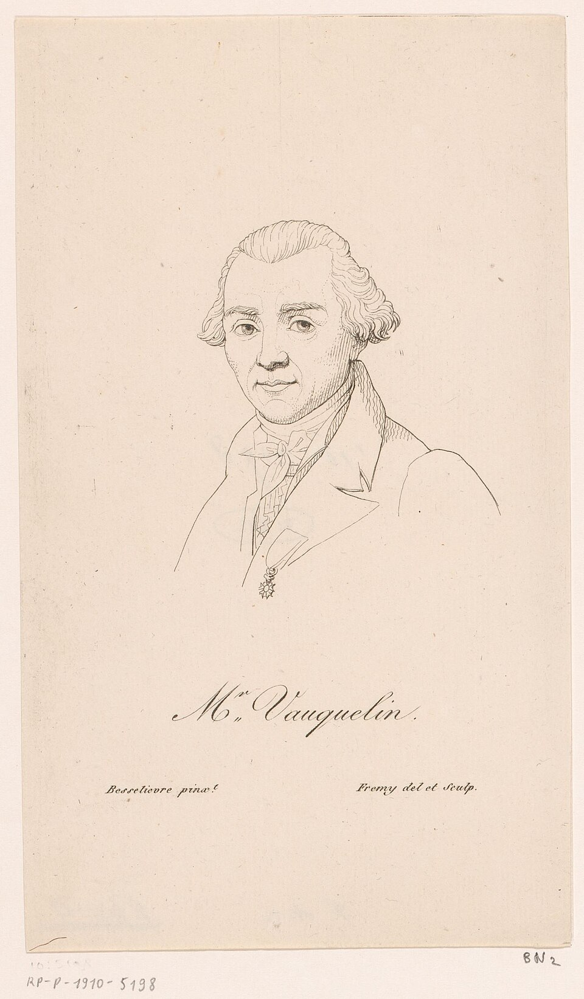
Vauquelin helped isolate asparagine from asparagus in 1806, revealing a new class of substances. Credit: Rijksmuseum / CC0
The first
Asparagine from asparagus
Louis-Nicolas Vauquelin and Pierre Jean Robiquet isolated asparagine from asparagus juice. It is generally recognized as the first amino acid discovered.
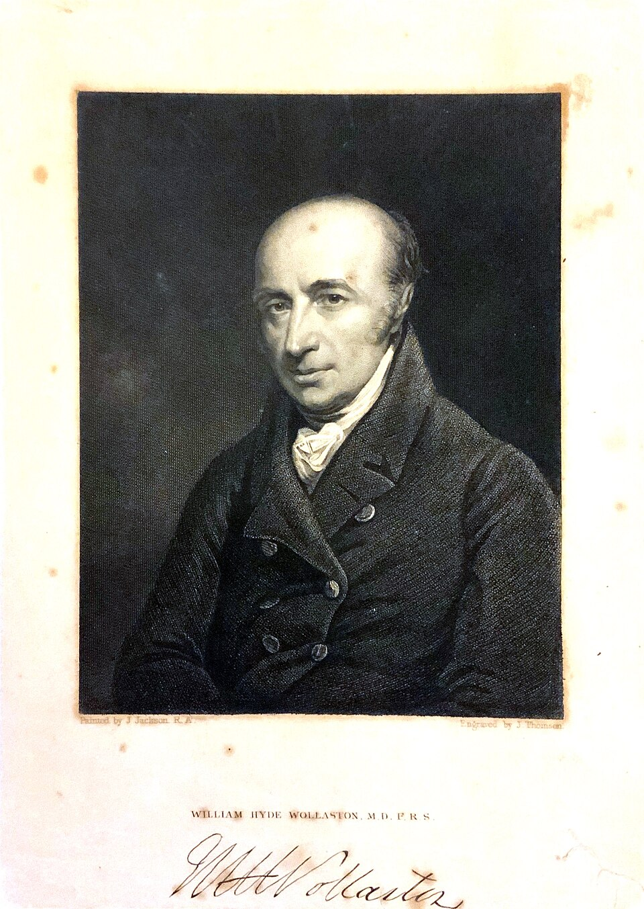
Wollaston isolated cystine from a urinary stone: amino-acid chemistry also emerged from medicine. Credit: J. Thomson / public domain
Early isolates
Cystine, glycine, and leucine
William Hyde Wollaston described cystine in a urinary stone. Henri Braconnot later obtained “sugar of gelatin” (glycine) and leucine by hydrolyzing proteins.
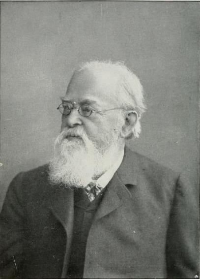
Ritthausen isolated glutamic acid from wheat gluten, linking amino acids to food proteins. Credit: T. B. Osborne / public domain
Plant chemistry
Glutamate and arginine
Karl Heinrich Ritthausen isolated glutamic acid from wheat gluten. Ernst Schulze and Ernst Steiger later isolated arginine from lupin seedlings.
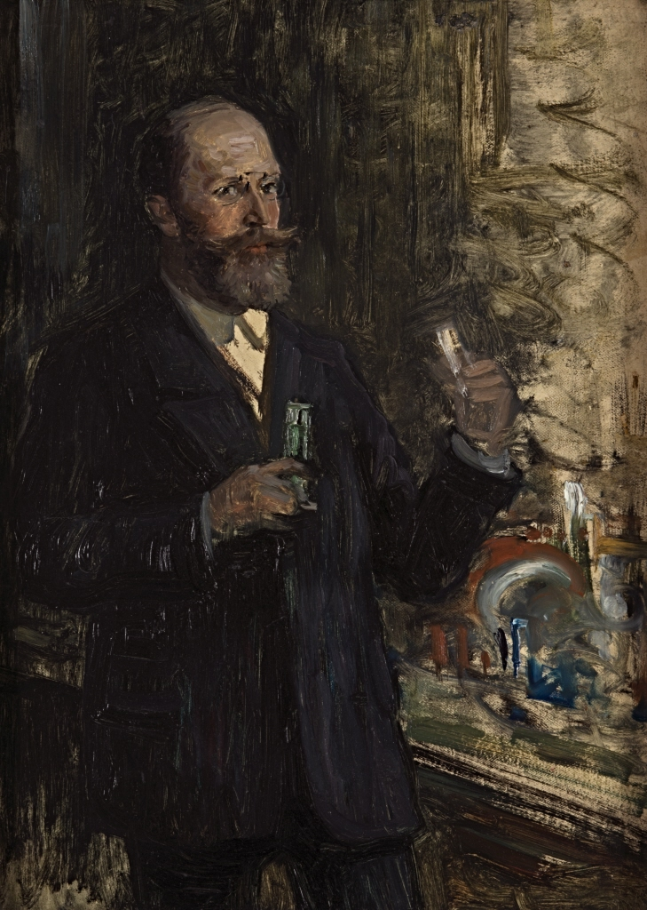
Fischer synthesized short peptides, testing how amino-acid units could join into chains. Credit: William Pape / public domain
Making chains
Fischer builds peptides
Emil Fischer developed methods for separating amino acids, introduced the term peptide, and synthesized short chains—evidence that proteins could be built from amino-acid units.
Rose’s nutrition experiments helped identify amino acids that must come from food. Credit: Carnegie Mellon / public domain
The standard twenty
Threonine completes the set
William Cumming Rose and colleagues identified threonine while studying essential nutrients. It was the last of the 20 standard amino acids to be discovered.
Sanger determined insulin’s sequence, showing proteins have a specific amino-acid order. Credit: Wikimedia Commons, public domain
Sequence and shape
Proteins become readable
Linus Pauling and colleagues proposed the α-helix and β-sheet. Frederick Sanger then established insulin’s complete amino-acid sequence, proving proteins have a defined order.
Nirenberg helped decipher the genetic code connecting RNA codons to amino acids. Credit: NLM / no restrictions
Cracking the code
Codons meet amino acids
Marshall Nirenberg and J. Heinrich Matthaei showed that UUU directs phenylalanine. Nirenberg, Har Gobind Khorana, and Robert Holley shared the 1968 Nobel Prize for interpreting the genetic code.
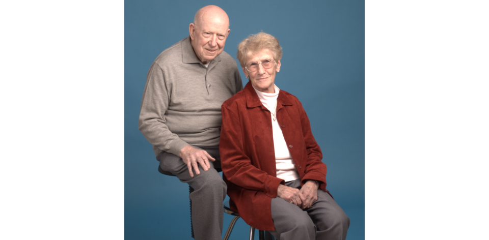
The Stadtmans studied selenium biochemistry, helping establish selenocysteine’s role in enzymes. Credit: NIH / public domain
A 21st amino acid
Selenocysteine changes the count
Researchers found selenium built directly into enzymes, then uncovered the special machinery that recodes UGA to insert selenocysteine instead of stopping translation.
Science keeps refining categories. Pyrrolysine is sometimes called the 22nd genetically encoded amino acid, but it occurs in certain archaea and bacteria—not in human proteins. That is why this lesson focuses on the 21 used by humans.
Explorer
The 21 human proteinogenic amino acids
Tap any card for details. The standard genetic code directly assigns 20; human cells can also recode UGA to insert selenocysteine (Sec/U).
A. Electrically Charged Side Chains
These side chains carry a net charge at physiological pH 7.4. Charged amino acids are often found on protein surfaces, where they interact with water and other charged molecules.
Positively charged (+)
ArgR
Arginine
Guanidinium side chain; pKa 12.1
HisH
Histidine
Imidazole ring; pKa 6.0; often at active sites
Essential
LysK
Lysine
Long chain with –NH₃⁺ tip; pKa 10.7
Essential
Negatively charged (−)
AspD
Aspartic Acid
Short –CH₂–COO⁻; pKa 3.7
GluE
Glutamic Acid
Longer –(CH₂)₂–COO⁻; pKa 4.15
B. Polar Uncharged Side Chains
These side chains form hydrogen bonds with water but carry no net charge. They are often found in enzyme active sites or on protein surfaces.
SerS
Serine
Hydroxyl –OH; phosphorylation site
ThrT
Threonine
–OH with methyl branch
Essential
AsnN
Asparagine
Amide –CONH₂; H-bond donor & acceptor
GlnQ
Glutamine
Longer amide chain; nitrogen transport
C. Special Cases
Each of these breaks a rule: glycine has no chirality, proline forms a ring with the backbone, cysteine forms disulfide bridges, and selenocysteine uses the rare element selenium.
CysC
Cysteine
–SH thiol; forms –S–S– bridges; pKa 8.1
SecU
Selenocysteine
–SeH; 21st amino acid; UGA codon
GlyG
Glycine
R = H; only achiral amino acid
ProP
Proline
Pyrrolidine ring; introduces kinks in chains
D. Hydrophobic Side Chains
These side chains avoid water and cluster together in a protein's core, driving folding. They are the "greasy" glue that holds protein 3-D structure together.
AlaA
Alanine
Methyl –CH₃; smallest hydrophobic R
ValV
Valine
Branched 3-carbon; often in β-sheets
Essential
IleI
Isoleucine
Two branches; 4 carbons
Essential
LeuL
Leucine
Branched; most common in proteins
Essential
MetM
Methionine
Sulfur in chain; start codon (AUG)
Essential
PheF
Phenylalanine
Benzene ring; bulky aromatic
Essential
TyrY
Tyrosine
Phe + –OH; both aromatic & polar
TrpW
Tryptophan
Indole ring; precursor to serotonin
Essential
Chemical behavior
One molecule, different charge states
Amino acids are amphoteric: the carboxyl group can donate H⁺ while the amino group can accept H⁺. Their charge therefore changes with pH. Near physiological pH, most free amino acids are zwitterions—they carry both a positive and a negative charge while their total charge may be zero.
Ionization model
Glycine in water: follow the population
acidicneutralbasic
H₃N⁺—CH₂—COO⁻
Cation (+1)
Zwitterion (0)
Anion (−1)
0Zwitterion: opposite charges, approximately zero net charge.
This equilibrium model describes free glycine (R = H), using pKa values 2.34 and 9.60. The formula shows the most abundant form; the charge is an average over many molecules. Protein residues have different environments and pKa values.
Categories overlap. “Polar,” “charged,” and “hydrophobic” are useful models, not rigid boxes. Tyrosine has an aromatic hydrophobic ring and a polar hydroxyl; histidine’s charge changes near physiological pH; cysteine can be neutral or negatively charged depending on its environment.
Bonding
Peptide bonds: linking amino acids
In a cell: amino acids are activated and carried by tRNAs. The ribosome joins them using energy invested in that activation. Free amino acids do not spontaneously assemble into proteins in water. The diagram below is net condensation bookkeeping.
A peptide bond forms when the carboxyl group of one amino acid reacts with the amino group of another, releasing a water molecule (condensation reaction).
1
Two amino acids align: the –COOH of amino acid 1 faces the –NH₂ of amino acid 2.
2
A condensation reaction occurs — the –OH from the carboxyl and an –H from the amino group combine and leave as water (H₂O).
3
A covalent C–N peptide bond forms between the two residues. The linked pair is called a dipeptide.
4
During translation, the ribosome extends the chain at its C-terminus, so synthesis proceeds from N to C. Hundreds or thousands of amino acids can link this way.
Condensation reaction
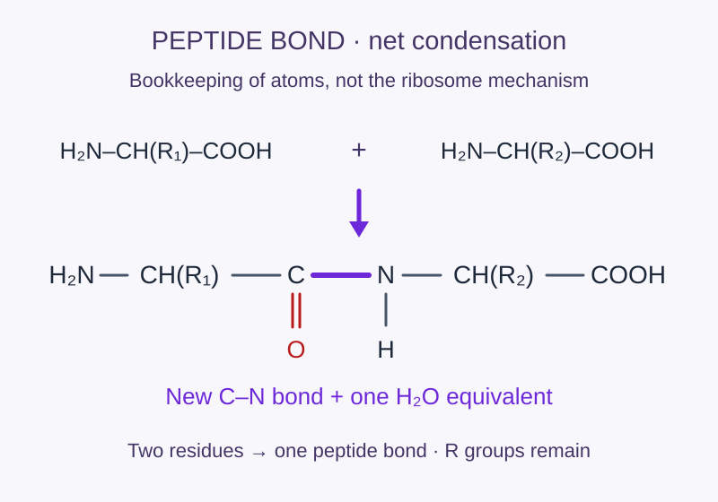
The purple C–N link is the new peptide bond. Combining two free amino acids corresponds to one water molecule in net condensation bookkeeping. In cells, activated amino acids are delivered by tRNAs; this is not a drawing of that mechanism. Original classroom schematic.
Short chains are often called peptides; longer chains are polypeptides. There is no universal length cutoff, and one or more folded chains can make a functional protein.
Interactive Lab
Build a peptide chain
Click amino acids to add them to your chain. Peptide bonds form automatically between each residue.
One substitution, a different side chain
Start with Leu–Val–Ile–Phe–Ala–Met–Trp–Leu. Predict what happens to residue 4 when phenylalanine (Phe) is replaced by lysine (Lys). The number of peptide bonds stays the same.
Load the original, make a prediction, then test the substitution.
Controlled comparison · near pH 7
Evidence
Original
After Phe → Lys
Sequence, N → C
LVIFAMWL
Test to reveal
Residues / peptide bonds
8 / 7
—
Residue 4 side chain
Phe: hydrophobic aromatic ring
—
Model placement of residue 4
Near the center
—
“Replacing ___ with ___ changed ___, while ___ stayed constant. This supports ___, but does not prove ___.”
Write an explanation using the evidence above.
Your explanation stays on this page until you reload. Print the lesson to keep your evidence and explanation.
Amino acid palette
Click amino acids to start your chain →
Add amino acids to see chain properties.
Sequence → side-chain placement
Each numbered circle is one residue. Positions indicate category tendencies, not a calculated fold. Original classroom model. Scroll sideways for a long chain; click to enlarge.
Build a chain of at least 3 residues to see how side-chain chemistry can influence folding.
chargedpolarspecialhydrophobic
Model note: this is a side-chain placement diagram, not a structure prediction. Positions are assigned by category and sequence index; “special” residues are placed outside for display and have no single shared water preference; it does not calculate energy, bond geometry, or a physically possible fold. Hydrophobic regions of membrane proteins can face lipids instead of being buried in a water-soluble core. Real folding also depends on sequence order, temperature, pH, solvent, chaperones, and many other interactions.
From information to function
How a gene becomes a working protein
A protein’s amino-acid order is its primary structure. That sequence constrains how the chain folds, and the resulting three-dimensional shape controls what the protein can bind, catalyze, carry, or support.
1
DNA stores the recipe
A gene contains nucleotide bases. During transcription, one DNA strand acts as a template for messenger RNA.
Template DNA: 3′–TAC–AAA–CGG–5′→2
mRNA carries codons
The ribosome reads mRNA three bases at a time. Each three-base codon specifies an amino acid or a stop signal.
mRNA: 5′–AUG–UUU–GCC–3′→3
The chain folds
tRNAs deliver amino acids. The ribosome links them N-terminus to C-terminus; interactions then guide folding and modification.
Met–Phe–Ala → shape
The four levels of protein structure
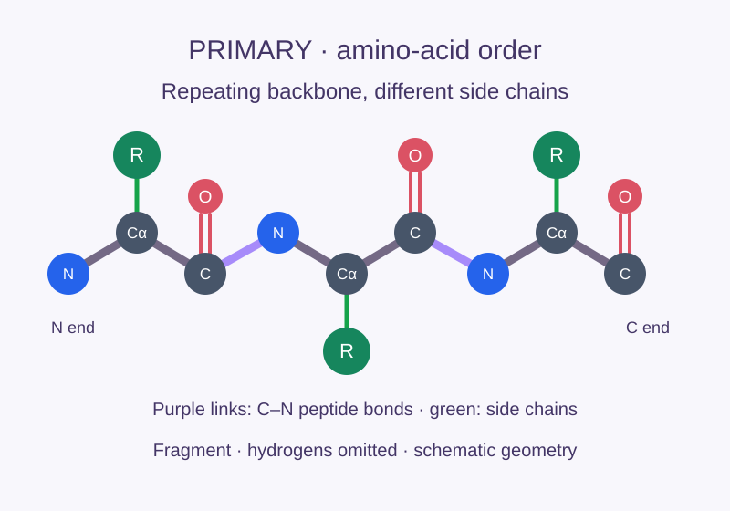
Purple C–N links are peptide bonds; green R groups vary. Original schematic fragment; hydrogens omitted.
Level 1
Primary
The covalent amino-acid sequence. A single substitution can alter folding or function, as in sickle-cell hemoglobin.
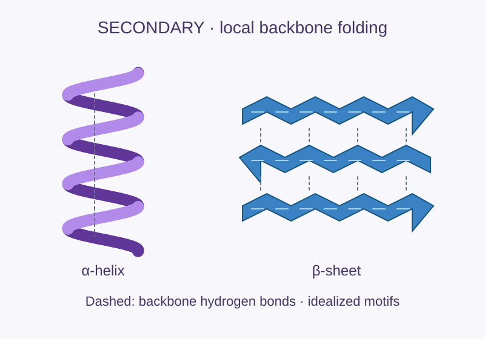
α-helices and β-sheets are local backbone motifs. Dashed lines represent backbone hydrogen bonds. Original idealized schematic.
Level 2
Secondary
Local α-helices, β-sheets, and turns stabilized mainly by hydrogen bonds between backbone groups.
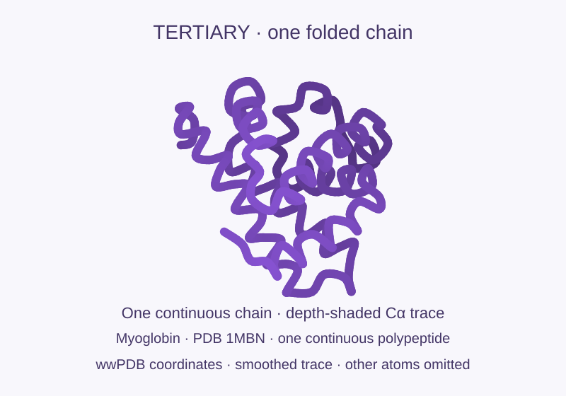
One continuous myoglobin chain (PDB 1MBN). Smoothed experimental Cα coordinates; heme and other atoms omitted. wwPDB data: CC0.
Level 3
Tertiary
The overall 3-D shape of one chain, stabilized by hydrophobic packing, hydrogen bonds, ionic attractions, and disulfide bonds.
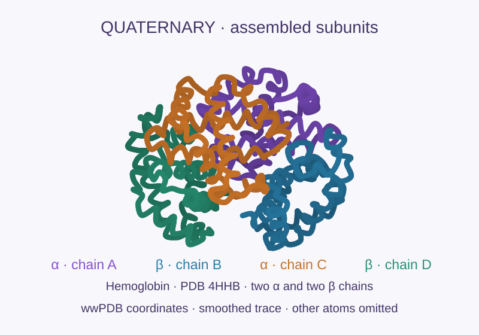
Hemoglobin has four folded subunits (PDB 4HHB): two α chains and two β chains. Smoothed experimental Cα coordinates; other atoms omitted. wwPDB data: CC0.
Level 4
Quaternary
Two or more folded polypeptide subunits assembled together. Hemoglobin, for example, contains four subunits.
Original classroom illustrations. Folded traces rendered from public wwPDB coordinate data: 1MBN, Watson & Kendrew and 4HHB, Fermi et al.. Data: CC0. Click a graphic to enlarge and read its explanation.
Why folding matters: heat, extreme pH, or chemicals can disrupt the interactions holding a protein’s shape. This denaturation often destroys function without breaking the primary sequence—like egg white changing from clear to opaque as its proteins unfold and aggregate.
Nutrition
The 9 essential amino acids
Your body cannot synthesize enough of these to meet its needs — food must supply them. Complete protein sources (meat, fish, eggs, soy, quinoa) contain all nine.
Read these as examples, not one-to-one matches. Each food contains many amino acids. Digestion breaks its proteins into amino acids that your body can reuse. Plant foods also supply essential amino acids, in different proportions; a varied diet can provide them all. Click any photo to enlarge it.
HistidineHis · H
Makes histamine; important for immune response and stomach acid production.
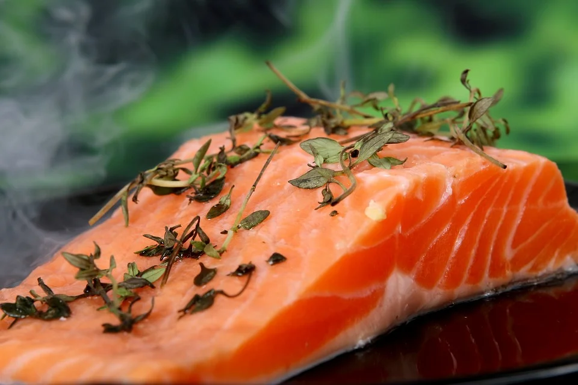
Histidine · Salmon protein supplies histidine, along with the other essential amino acids. Other sources include chicken, dairy, and soy.Photo: NjoyHarmony · CC0. Resized / WebP; cropped preview.
IsoleucineIle · I
BCAA; involved in muscle metabolism and energy regulation.
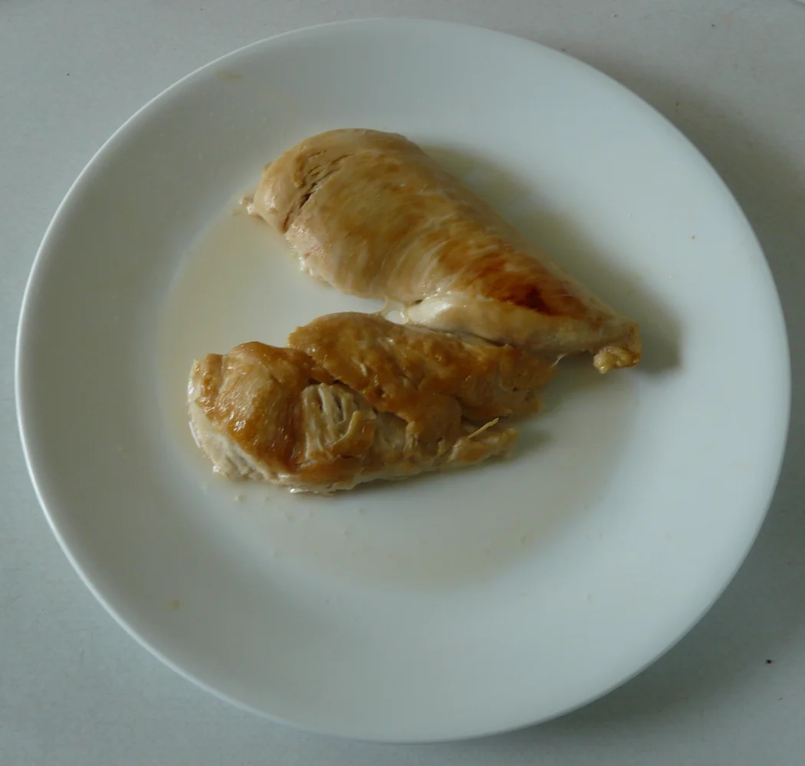
Isoleucine · Chicken supplies isoleucine, one of the three branched-chain amino acids. Eggs, soy, and dairy also supply it.Photo: The Bushranger · CC BY-SA 4.0. Resized / WebP; cropped preview.
LeucineLeu · L
Most abundant BCAA; triggers muscle protein synthesis (mTOR pathway).
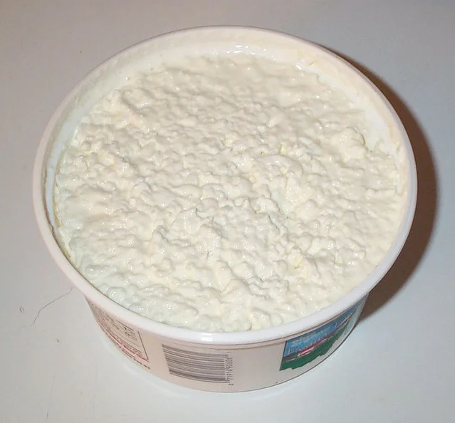
Leucine · Cottage cheese contains milk proteins that supply leucine. Other sources include soy, eggs, and meat.Photo: Stu Spivack - flickr.com · CC BY-SA 2.0. Resized / WebP; cropped preview.
LysineLys · K
Required for collagen and carnitine synthesis; supports calcium absorption.
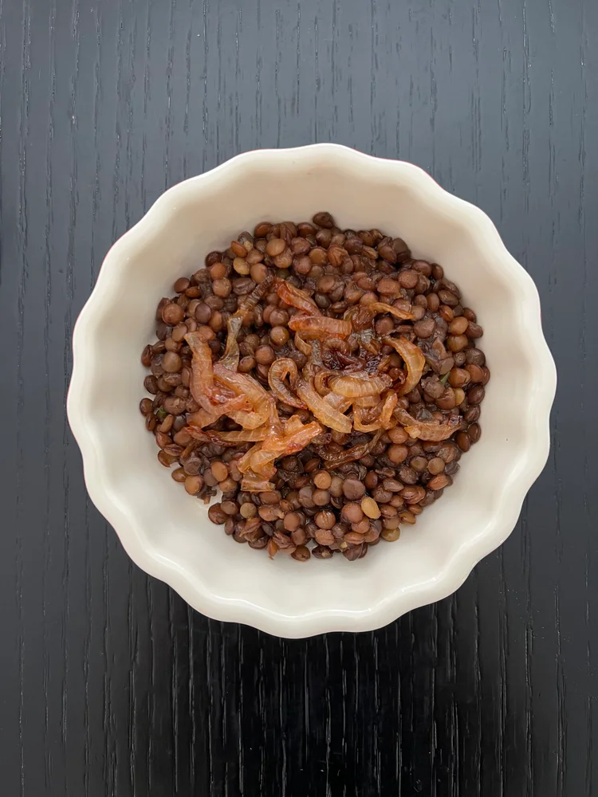
Lysine · Lentils supply lysine. Legumes complement many grains, whose proteins are relatively low in lysine; beans and tofu are other examples.Photo: HaJunkiyada · CC BY-SA 4.0. Resized / WebP; cropped preview.
MethionineMet · M
Encoded by AUG; converted to the methyl donor SAM; precursor to cysteine.
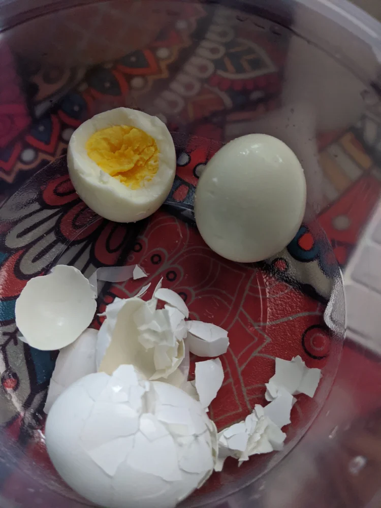
Methionine · Egg protein supplies methionine, a sulfur-containing amino acid. Fish, meat, and seeds also supply it.Photo: 3steph14 · CC BY-SA 4.0. Resized / WebP; cropped preview.
PhenylalaninePhe · F
Precursor to tyrosine, dopamine, and norepinephrine.
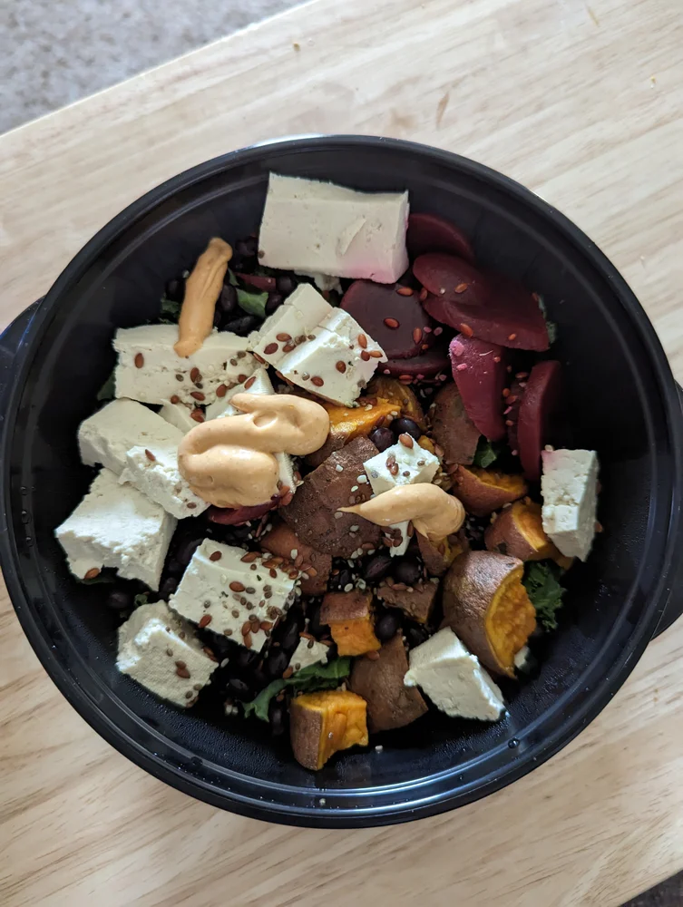
Phenylalanine · Tofu supplies phenylalanine and all eight other essential amino acids. Your body can use phenylalanine to make tyrosine.Photo: 3steph14 · CC BY-SA 4.0. Resized / WebP; cropped preview.
ThreonineThr · T
Used in proteins, including mucins that help protect the gut lining.
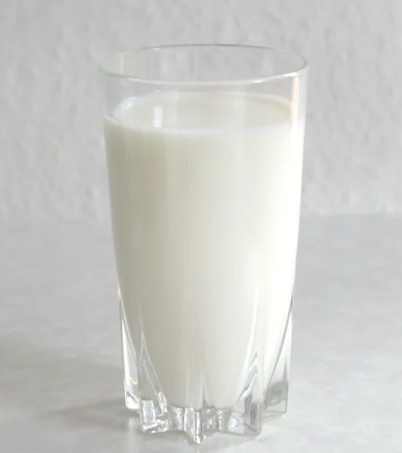
Threonine · Milk proteins supply threonine. Eggs, fish, and soy are other food sources.Photo: Stefan Kühn · CC BY-SA 3.0. Resized / WebP; cropped preview.
TryptophanTrp · W
Precursor to serotonin, which can be converted to melatonin.
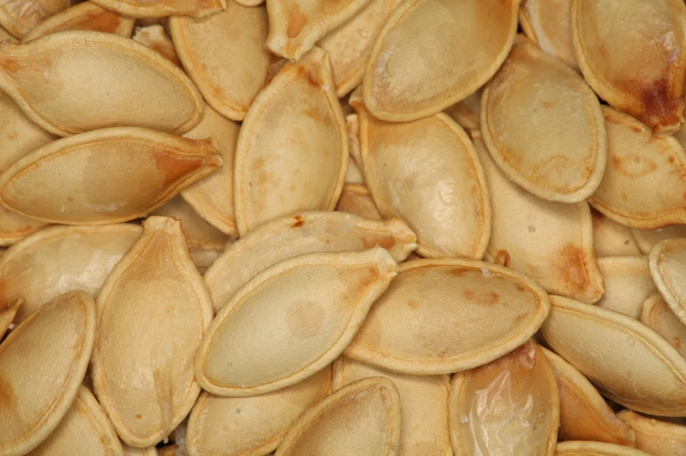
Tryptophan · Pumpkin seed kernels supply tryptophan, used to build proteins and to make serotonin. Eggs, soy, and dairy also supply it.Photo: Daniel Schwen · CC BY 3.0. Resized / WebP; cropped preview.
ValineVal · V
Branched-chain amino acid used in proteins and energy metabolism.
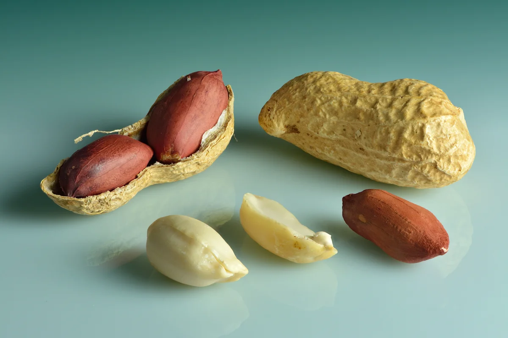
Valine · Peanuts supply valine, a branched-chain amino acid. Beans, dairy, and meat also supply it.Photo: Ivar Leidus · CC BY-SA 4.0. Resized / WebP; cropped preview.
Choose one answer for each question. Feedback appears immediately, and you can change your answer.
0/4
Answer all four to complete the check.
Beyond Structure
What amino acids do beyond proteins
🧠Neurotransmitter biosynthesis
Tryptophan → serotonin & melatonin. Tyrosine → dopamine & norepinephrine. Glutamate itself is the brain's main excitatory neurotransmitter.
⚡Metabolism & energy
Amino acids can be broken down (catabolized) for energy when carbohydrates are scarce. Alanine shuttles nitrogen from muscle to liver during fasting.
🔬Signaling & regulation
Serine and threonine are phosphorylated by kinases to switch proteins on/off. Tyrosine is targeted in major receptor pathways (insulin, growth factors).
🛡️Antioxidant defense
Cysteine is a key component of glutathione — the cell's primary antioxidant. Selenocysteine in glutathione peroxidase destroys reactive oxygen species.
🔗Structural roles
Glycine is ~35% of collagen by mass. Proline creates structural "kinks" in collagen's triple helix. Cysteine disulfide bridges stabilize keratin (hair, nails).
🧬Epigenetics
Methionine is the universal methyl group donor via S-adenosylmethionine (SAM). DNA methylation — a key epigenetic mark — depends on adequate methionine intake.
Textbook reference
Key vocabulary
Amino acid
An organic molecule with amino and carboxyl groups; α-amino acids are the monomers used to build proteins.
Residue
An amino acid after it has joined a chain and lost the atoms used to form peptide bonds.
Peptide bond
The planar covalent amide link, –CO–NH–, joining one residue to the next.
N-terminus
The end of a peptide with the free amino group; conventionally written on the left.
C-terminus
The end with the free carboxyl group; conventionally written on the right.
Codon
A three-nucleotide mRNA word that specifies an amino acid or translation stop signal.
Essential
Required from the diet because the body cannot synthesize enough to meet its needs.
Zwitterion
A molecule carrying positive and negative formal charges at the same time.
Denaturation
Loss of a protein’s native folding and activity without necessarily breaking its peptide backbone.


_-_in_shell,_shell_cracked_open,_shelled,_peeled.jpg){kind=link}